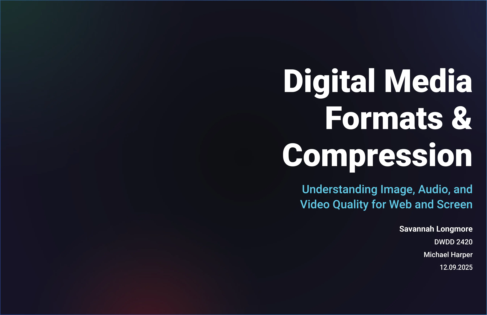

Overview
This research project examined how different multimedia formats (JPEG vs WebP vs AVIF, video codecs, etc.) affect loading times, bandwidth usage, visual quality, and perceived user experience on the web. The goal was to create practical guidelines for choosing the right format in real-world design scenarios.
My Role
UX Researcher & Analyst
Methods
Performance testing, A/B comparisons, user perception surveys
Deliverable
Research report + format decision framework
Key Findings
Through controlled tests and user feedback, several clear patterns emerged regarding format performance and perception.
- AVIF and WebP reduced file sizes by 30–60% compared to JPEG while maintaining or improving perceived quality
- Users consistently rated faster-loading pages as higher quality — even when objective visual differences were small
- Mobile users were particularly sensitive to large video files; modern codecs (e.g. AV1, VP9) significantly improved playback smoothness
- Accessibility (alt text, captions) was frequently overlooked in highly compressed assets


Recommendations
Based on the findings, I developed a simple decision framework for multimedia assets:
- Default to AVIF/WebP for static images when browser support allows
- Use JPEG as fallback for broader compatibility
- Apply lazy loading + responsive images (srcset) for all media
- Prefer modern video codecs (AV1/VP9) and provide captions/transcripts
Full Research Document
80-page research report exploring multimedia formats, compression, performance, and user experience.
